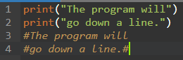
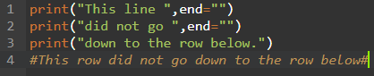
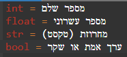
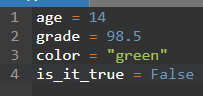
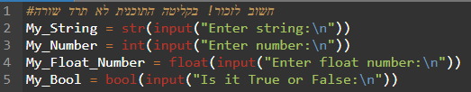
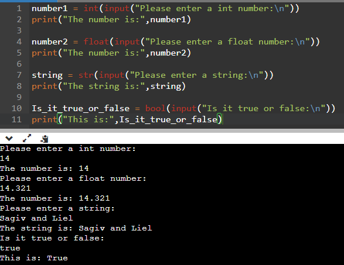

How to print and what are variables?
When we want to print text to the output screen, we will use the " print() " command.

Remember! When we print text to the screen, the program will go down a line.

But, if we don't want to go down a line, how do we do it? we will use " end = "" " command.

What are variables?
In programming, a variable is a part of memory in a program that contains data that can change during runtime, according to instructions given to it.

When choosing a name for a variable, we want the name to explain the value inside it.

There are cases where we would like the user to receive the variable through the output screen, how will we do this? we will write this:" type(input("...")) "

OK, what if we want to print the value of the variable?
